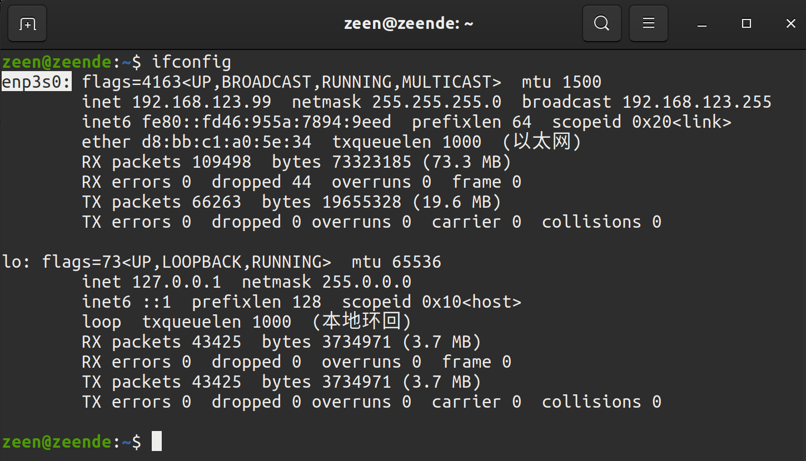
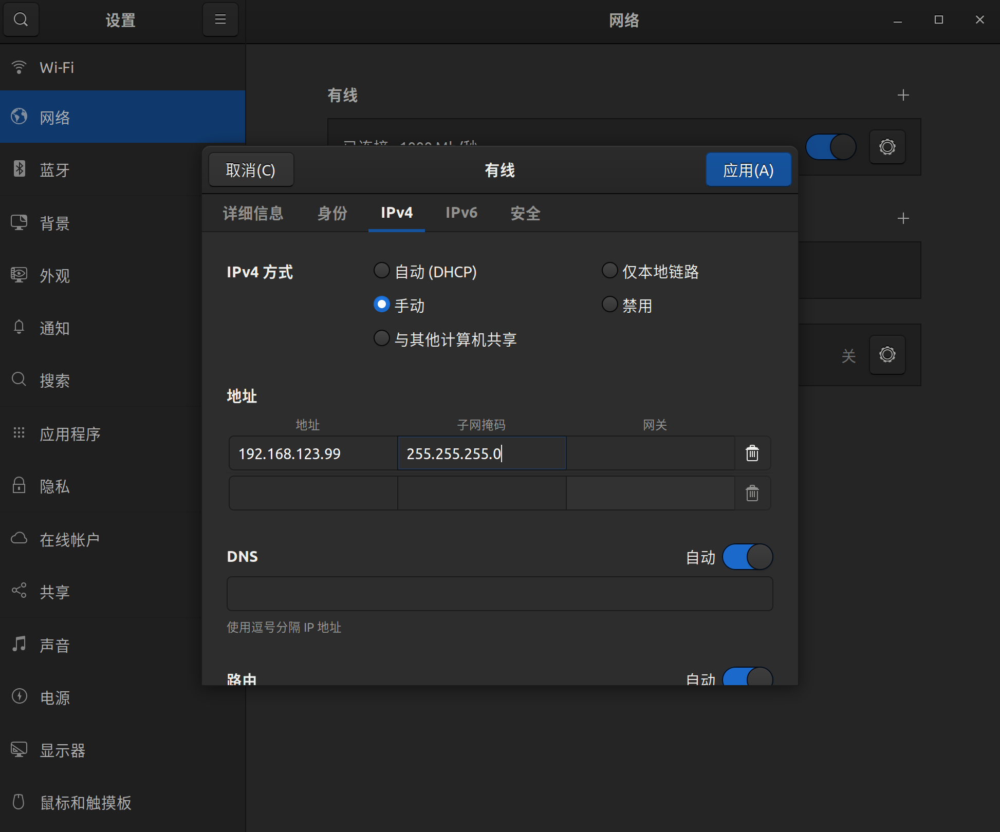
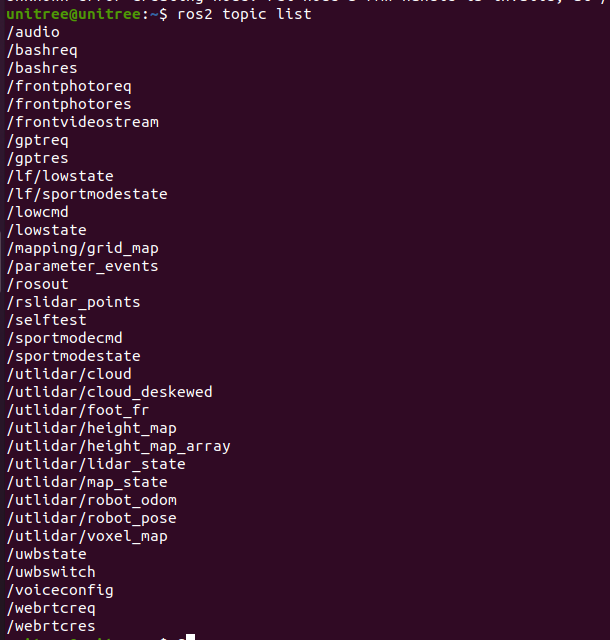

ROS2 通信例程
说明
unitree_sdk2 基于 cyclonedds 实现了一个易用的机器人数据通信机制，应用开发者可以利用这一接口实现机器人的数据通讯和指令控制(支持Go2、B2、H1和G1)。 ROS2 也使用 DDS 作为通讯工具，因此 Go2、B2 、H1和 G1 机器人的底层可以兼容 ROS2，使用 ROS2 自带的 msg 直接进行通讯和控制，而无需通过 SDK 接口转发。
环境配置
系统要求
测试过的系统和ROS2版本 |系统|ROS2 版本| |--|--| |Ubuntu 20.04|foxy| |Ubuntu 22.04|humble|
下文以 ROS2 foxy 为例，如需使用其他版本的 ROS2，在相应的地方替换 foxy 为当前的 ROS2 版本名称即可。
Note
ROS2 不同发行版的 API 可能存在差异，例如 rosbag 的调用方法等，仓库中的例程在 ROS2 foxy 下开发，如果使用的是其他 ROS2 发行版，请参考官方文档进行调整。
ROS2 foxy 的安装可参考: https://docs.ros.org/en/foxy/Installation/Ubuntu-Install-Debians.html
ctrl+alt+T 打开终端，克隆仓库：https://github.com/unitreerobotics/unitree_ros2
git clone https://github.com/unitreerobotics/unitree_ros2
其中
- cyclonedds_ws 文件夹为编译和安装 Unitree 机器人 ROS2 msg 的工作空间，在子文件夹 cyclonedds_ws/unitree/unitree_go和cyclonedds_ws/unitree/unitree_api中定义了 Unitree 状态获取和控制相关的 ROS2 msg。
安装 Unitree ROS2 功能包
1. 安装依赖
sudo apt install ros-foxy-rmw-cyclonedds-cpp
sudo apt install ros-foxy-rosidl-generator-dds-idl
Note
为了方便接口的使用，推荐同时安装 unitree_sdk2
2. 编译 cyclone-dds
由于 G1 使用的是 cyclonedds 0.10.2 版本，因此需要先更改 ROS2 的 DDS 实现。详见：https://docs.ros.org/en/foxy/Concepts/About-Different-Middleware-Vendors.html
编译 cyclonedds 前请确保在启动终端时没有 source ros2 相关的环境变量，否则会导致 cyclonedds 编译报错。如果安装 ROS2 时在~/.bashrc中添加了 " source /opt/ros/foxy/setup.bash "，需要修改 ~/.bashrc 文件将其删除：
sudo apt install gedit
sudo gedit ~/.bashrc
在弹出的窗口中，注释掉 ROS2 相关的环境变量，例如：
# source /opt/ros/foxy/setup.bash
在终端中执行以下操作编译 cyclone-dds
cd ~/unitree_ros2/cyclonedds_ws/src
#克隆cyclonedds仓库
git clone https://github.com/ros2/rmw_cyclonedds -b foxy
git clone https://github.com/eclipse-cyclonedds/cyclonedds -b releases/0.10.x
cd ..
colcon build --packages-select cyclonedds #编译cyclonedds
3. 编译 unitree_go 和 unitree_api 功能包
编译好 cyclone-dds 后就需要 Ros2 相关的依赖来完成 G1 功能包的编译，因此编译前需要先 source ROS2 的环境变量。
source /opt/ros/foxy/setup.bash #source ROS2 环境变量
colcon build #编译工作空间下的所有功能包
连接到 G1
1. 配置网络
使用网线连接 G1 和计算机，使用 ifconfig 查看网络信息，确认机器人连接到的以太网网卡。（例如如图中的enp3s0，以实际为准）

接着打开网络设置，找到机器人所连接的网卡，进入 IPv4 ，将 IPv4 方式改为手动，地址设置为192.168.123.99，子网掩码设置为255.255.255.0，完成后点击应用，等待网络重新连接。

打开 setup.sh 文件
sudo gedit ~/unitree_ros2/setup.sh
bash 的内容如下：
#!/bin/bash
echo "Setup unitree ros2 environment"
source /opt/ros/foxy/setup.bash
source $HOME/unitree_ros2/cyclonedds_ws/install/setup.bash
export RMW_IMPLEMENTATION=rmw_cyclonedds_cpp
export CYCLONEDDS_URI='<CycloneDDS><Domain><General><Interfaces>
<NetworkInterface name="enp3s0" priority="default" multicast="default" />
</Interfaces></General></Domain></CycloneDDS>'
其中 "enp3s0" 为 G1 所连接的网卡名称，根据实际情况修改为对应的网卡名称。在终端中执行：
source ~/unitree_ros2/setup.sh
即可完成 G1 开发环境的设置。 如果不希望每次打开新终端都执行一次 bash 脚本，也可将 setup.sh 中的内容写入到 ~/.bashrc中，但是当系统有多个 ROS 环境共存需要注意。
2. 连接测试
完成上述配置后，建议重启一下电脑再进行测试。
确保机器人连接正确，打开终端输入 ros2 topic list，可以看见如下话题：
